Breakthroughs in Numerical Analysis#
“The theory of numerical methods is much older than the electronic computer, but the computer has given the subject a new lease of life.” – attributed to Leslie Fox
Long before there was anything to compute with, there was already a
mature theory of how to compute: bisecting a bracket, iterating a
promising guess, fitting a curve through scattered points. This
chronology traces the ideas behind
mathematicskit.numerical_analysis, from ancient square-root
iterations and faster root-finders, through interpolation and the
theory of best approximation, to the discovery that floating-point
rounding can make a harmless-looking problem impossible to solve
accurately.
c. 1800 BCE – The Babylonian Method and Bisection#
Old Babylonian tablets from around 1800-1600 BCE record the square root of 2 to about six decimal places. The iterative rule behind such values, spelled out by Heron of Alexandria in the 1st century CE, averages a guess with the number divided by the guess. It is exactly Newton’s method applied to \(f(x) = x^2 - a\), more than three millennia before Newton. Bisection, which repeatedly halves a bracket known to contain a root, is far more recent as a named and analyzed method. It is also the most elementary root-finder possible: it needs nothing but the intermediate value theorem, and it never diverges.
Implementation: mathematicskit.numerical_analysis.systems.root_finding.Bisection
exposes its full per-iterate history for the convergence-order analysis
below. The classic “Babylonian” square-root iteration is
FixedPointIteration
applied to \(g(x) = \tfrac12(x + a/x)\).
1669-1690 – Newton and Raphson’s Method#
Isaac Newton’s 1669 manuscript De analysi sketched an iterative method for approximating the roots of a polynomial. Joseph Raphson’s 1690 Analysis Aequationum Universalis gave a simpler, more direct version of the same iteration, and Thomas Simpson stated it in 1740 in its modern calculus form for general functions: linearize \(f\) at the current guess and step to where the tangent line crosses zero. Near a simple root the method roughly doubles the number of correct digits at every step. That property makes it the workhorse of numerical root-finding to this day, at the cost of needing a derivative and a good enough starting guess.
Implementation: mathematicskit.numerical_analysis.systems.root_finding.NewtonRaphson
implements this iteration, and
mathematicskit.numerical_analysis.utils.error_analysis.estimate_convergence_order()
measures its quadratic convergence order from the iterate history. The
test suite cross-checks it against scipy.optimize.newton().
References: J. Raphson, Analysis Aequationum Universalis (London, 1690); T. Simpson, Essays on Several Curious and Useful Subjects in Speculative and Mix’d Mathematicks (London, 1740).
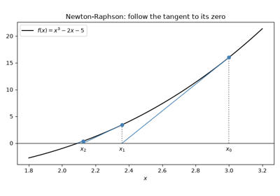
Newton-Raphson’s method: tangent lines and quadratic convergence
1687-1795 – Newton, Lagrange, and Polynomial Interpolation#
Isaac Newton worked out polynomial interpolation through divided differences, publishing it in the 1687 Principia and in the posthumous 1711 Methodus Differentialis. His form is easy to extend one point at a time. Joseph-Louis Lagrange’s 1795 lectures popularized the now-standard closed form, which Edward Waring had published in 1779: a weighted sum of basis polynomials, each equal to 1 at one node and 0 at all the others. Both forms represent the same unique degree-\(n\) polynomial through \(n+1\) points, which lets one construction be checked against the other.
Implementation: mathematicskit.numerical_analysis.systems.interpolation.LagrangeInterpolant
and NewtonDividedDifference
implement both forms. They are tested against each other for exact
agreement on the same data, and against
scipy.interpolate.BarycentricInterpolator as an external
check.
References: I. Newton, Methodus Differentialis (London, 1711); E. Waring, “Problems Concerning Interpolations,” Philosophical Transactions of the Royal Society 69 (1779), 59-67; J.-L. Lagrange, “Leçons élémentaires sur les mathématiques,” Séances des Écoles Normales (Paris, 1795).
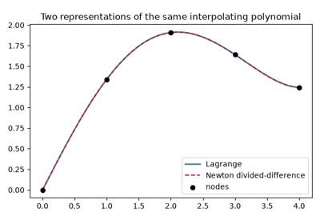
Lagrange vs. Newton divided-difference interpolation
1694 – Halley’s Method#
Edmond Halley, better known for his comet, published in 1694 a root iteration that uses the second derivative as well as the first. Where Newton’s method follows the tangent line to zero, Halley’s method follows a hyperbola that matches the function’s value, slope, and curvature:
Near a simple root the error is roughly cubed at every step, so the number of correct digits triples rather than doubles. Each step costs one extra derivative evaluation, which pays off when \(f''\) is cheap, as it is for polynomials.
Implementation: mathematicskit.numerical_analysis.systems.root_finding.Halley
records every iterate, and
estimate_convergence_order()
measures its cubic rate. The tests check it against
scipy.optimize.newton() called with fprime2, which runs the
same iteration.
References: E. Halley, “Methodus nova accurata & facilis inveniendi radices aequationum quarumcumque generaliter, sine praevia reductione,” Philosophical Transactions of the Royal Society 18 (1694), 136-148; T. R. Scavo and J. B. Thoo, “On the Geometry of Halley’s Method,” American Mathematical Monthly 102 (1995), 417-426.
1805-1809 – Legendre, Gauss, and Least Squares#
Adrien-Marie Legendre published the method of least squares in 1805 as
a practical rule for combining more measurements than there are
unknowns. Carl Friedrich Gauss said he had used the idea privately
since 1795, including in 1801 to predict where the newly discovered
dwarf planet Ceres would reappear. He published his own probabilistic
justification in 1809. The priority dispute was never settled, and both
men are now credited. Fitting a degree-\(d\) polynomial to noisy
data by least squares reduces to solving a linear system for the
coefficients that minimize the sum of squared residuals. The same
principle underlies nearly every regression method in
mathematicskit.statistics.
Implementation: mathematicskit.numerical_analysis.systems.regression.PolynomialRegression
solves this problem with numpy.linalg.lstsq(), and
mathematicskit.numerical_analysis.utils.error_analysis.condition_number()
flags the numerical instability that creeps in as the fitted degree
grows.
References: A.-M. Legendre, Nouvelles méthodes pour la détermination des orbites des comètes (Paris: Courcier, 1805), Appendix; C. F. Gauss, Theoria Motus Corporum Coelestium (Hamburg: Perthes et Besser, 1809).
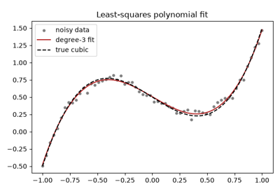
Least-squares polynomial regression and its conditioning
1819 – Horner’s Method#
William George Horner’s 1819 paper on solving numerical equations popularized a way to evaluate a polynomial by nested multiplication:
The scheme needs only \(n\) multiplications and \(n\) additions. Alexander Ostrowski conjectured in 1954 that no general method can use fewer, and Victor Pan proved it in 1966. The same arithmetic had appeared earlier, in Paolo Ruffini’s 1804 memoir and in Qin Jiushao’s 1247 Mathematical Treatise in Nine Sections. The intermediate values are the coefficients of the quotient \(p(x)/(x - x_0)\). That gives \(p'(x_0)\) almost for free, and it lets a root, once found, be divided out of the polynomial (“deflation”) before searching for the next one.
Implementation: mathematicskit.numerical_analysis.systems.polynomials.horner()
returns the value, the derivative, and the deflated quotient in a
HornerResult. The
tests compare it with numpy.polyval() (which uses the same
scheme internally), numpy.polyder(), and numpy.polydiv().
References: W. G. Horner, “A new method of solving numerical equations of all orders, by continuous approximation,” Philosophical Transactions of the Royal Society of London 109 (1819), 308-335; A. M. Ostrowski, “On two problems in abstract algebra connected with Horner’s rule,” in Studies in Mathematics and Mechanics Presented to Richard von Mises (New York: Academic Press, 1954), 40-48; V. Ya. Pan, “Methods of computing values of polynomials,” Russian Mathematical Surveys 21 (1966), 105-136.
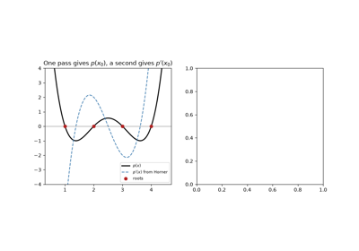
Horner’s method: evaluation, derivative, and deflation
1854 – Chebyshev and the Cure for Runge’s Phenomenon#
Pafnuty Chebyshev studied the polynomials that deviate least from zero on \([-1,1]\), nearly half a century before Carl Runge’s example (below) showed why they matter. They point to the node placement that tames interpolation’s instability: cluster the nodes near the endpoints, at the extrema of \(\cos(n\arccos x)\), instead of spacing them evenly. At these Chebyshev nodes the Lebesgue constant grows only logarithmically with the degree, which removes Runge’s divergence for the same smooth functions that defeat equally spaced nodes.
Implementation: mathematicskit.numerical_analysis.systems.chebyshev.chebyshev_nodes()
and ChebyshevInterpolant
implement this remedy, evaluated with the numerically stable
barycentric formula.
mathematicskit.numerical_analysis.utils.error_analysis.lebesgue_constant()
makes the difference in growth rate between the two node choices
directly measurable.
References: P. L. Chebyshev, “Théorie des mécanismes connus sous le nom de parallélogrammes,” Mémoires des Savants étrangers présentés à l’Académie de Saint-Pétersbourg 7 (1854), 539-586. The least-deviation polynomials behind Chebyshev nodes were developed in this and related memoirs of the 1850s.
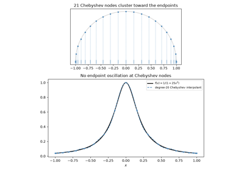
Chebyshev nodes: the cure for Runge’s phenomenon
1878 – Hermite Interpolation#
Charles Hermite asked for a polynomial that matches not only a function’s values at the nodes but also its derivatives there. With values and slopes at \(n+1\) distinct nodes there are \(2n+2\) conditions, so a unique polynomial \(H\) of degree at most \(2n+1\) satisfies them all. Its error has the same shape as Lagrange’s, with each node factor squared:
In Newton’s divided-difference form, \(H\) is simply the interpolant on the doubled node list \(x_0, x_0, x_1, x_1, \ldots\), with each “difference” between a node and its copy replaced by the derivative. Cubic Hermite pieces through pairs of nodes are the basis of many spline and curve-drawing methods.
Implementation: mathematicskit.numerical_analysis.systems.interpolation.HermiteInterpolant
wraps scipy.interpolate.KroghInterpolator, which treats
repeated nodes as derivative conditions. The tests check exact
reproduction of a quintic from three nodes and the closed-form error
\(x^2(x-1)^2\) for \(x^4\).
References: C. Hermite, “Sur la formule d’interpolation de Lagrange,” Journal für die reine und angewandte Mathematik 84 (1878), 70-79; F. T. Krogh, “Efficient algorithms for polynomial interpolation and numerical differentiation,” Mathematics of Computation 24 (1970), 185-190.
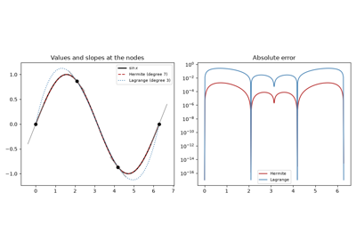
Hermite interpolation: matching slopes as well as values
1885-1912 – Weierstrass, Bernstein, and Uniform Approximation#
In 1885 Karl Weierstrass proved that every continuous function on a closed interval can be approximated uniformly, to any accuracy, by a polynomial. The theorem justifies polynomial approximation as a whole, even for functions with corners. His proof was not constructive. In 1912 Sergei Bernstein gave a short proof that builds the polynomials explicitly from probability:
The weights are the binomial probabilities for \(n\) coin flips with success probability \(x\), so \(B_n f(x)\) is the expected value of \(f\) at the observed success fraction. The law of large numbers then forces \(B_n f \to f\). Convergence is slow, since \(B_n(x^2) = x^2 + x(1-x)/n\), but Bernstein polynomials never oscillate. That property later made them the basis of Bézier curves.
Implementation: mathematicskit.numerical_analysis.systems.approximation.bernstein_polynomial()
evaluates \(B_n f\) with binomial weights from
scipy.stats.binom. The tests check exact reproduction of
linear functions and the closed form for \(x^2\).
References: K. Weierstrass, “Über die analytische Darstellbarkeit sogenannter willkürlicher Functionen einer reellen Veränderlichen,” Sitzungsberichte der Königlich Preußischen Akademie der Wissenschaften zu Berlin (1885), 633-639 and 789-805; S. Bernstein, “Démonstration du théorème de Weierstrass fondée sur le calcul des probabilités,” Communications de la Société Mathématique de Kharkov (2) 13 (1912), 1-2.
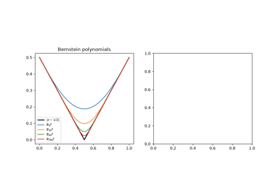
Bernstein polynomials and the Weierstrass theorem
1892 – Padé Approximants#
A Taylor polynomial is useless beyond its radius of convergence, and it cannot mimic a pole. Henri Padé’s 1892 thesis, building on earlier work by Jacobi and Frobenius, organized the rational alternatives. The \([m/n]\) Padé approximant is the ratio \(p(x)/q(x)\) of polynomials of degrees \(m\) and \(n\) whose Taylor series agrees with that of \(f\) through \(x^{m+n}\). Finding \(q\) means solving a small linear system in the Taylor coefficients. Built from the same coefficients as a Taylor polynomial, a Padé approximant often keeps converging far outside the series’ disk of convergence. The \([1/1]\) approximant of \(e^x\), \((1 + x/2)/(1 - x/2)\), is the trapezoidal rule’s amplification factor for \(y' = y\). Higher diagonal approximants are the stability functions of implicit Runge-Kutta methods and the core of the standard matrix-exponential algorithm.
Implementation: mathematicskit.numerical_analysis.systems.approximation.PadeApproximant
solves the linear system with numpy.linalg.solve().
scipy.interpolate.pade does the same but is deprecated. The tests
check the closed-form \([2/2]\) approximant of \(e^x\) and
convergence of the \([4/4]\) approximant of \(\log(1+x)\) at
\(x = 3\), where the Taylor series diverges.
References: H. Padé, “Sur la représentation approchée d’une fonction par des fractions rationnelles,” Annales scientifiques de l’École Normale Supérieure (3) 9 (1892), supplement, 3-93; G. A. Baker and P. Graves-Morris, Padé Approximants, 2nd ed. (Cambridge University Press, 1996).
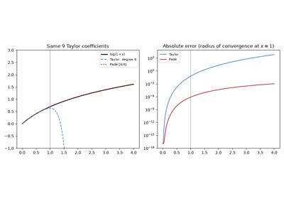
Padé approximants beyond the radius of convergence
1901 – Runge’s Phenomenon#
Carl Runge found something unsettling about polynomial interpolation. For the innocent-looking function \(f(x) = 1/(1+25x^2)\) on \([-1,1]\), interpolating at more equally spaced points makes the fit worse near the endpoints, with oscillations that grow without bound as the degree increases. The culprit is the nodes, not the function. With equally spaced nodes the Lebesgue constant, which governs the interpolation error, grows exponentially with the degree, so even an analytic function like Runge’s can defeat the method.
Implementation: mathematicskit.numerical_analysis.systems.chebyshev.runge_function()
and runge_phenomenon_errors()
reproduce this divergence for equally spaced nodes, side by side with
the Chebyshev cure (above).
References: C. Runge, “Über empirische Funktionen und die Interpolation zwischen äquidistanten Ordinaten,” Zeitschrift für Mathematik und Physik 46 (1901), 224-243.
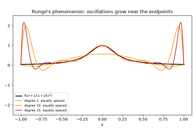
Runge’s phenomenon: equally spaced interpolation diverges
1926-1933 – Aitken, Steffensen, and Accelerating Convergence#
Many sequences converge linearly: the error shrinks by a roughly constant factor at each step. Alexander Aitken observed in 1926 that three consecutive terms are then enough to estimate the limit:
This \(\Delta^2\) process is exact when the error is purely geometric, \(a_n = L + c\,r^n\), and it speeds up the slowly converging Leibniz series for \(\pi\) by many orders of magnitude. An equivalent rule may already have been used by Seki Takakazu in 17th-century Japan to speed up polygon approximations of \(\pi\). In 1933 Johan Steffensen applied the extrapolation inside fixed-point iteration: from \(x_n\), compute \(g(x_n)\) and \(g(g(x_n))\), then jump to their Aitken extrapolate. The result converges quadratically, like Newton’s method, without any derivative.
Implementation: mathematicskit.numerical_analysis.systems.acceleration.aitken_delta_squared()
transforms a whole sequence, and
mathematicskit.numerical_analysis.systems.root_finding.Steffensen
records its iterates. The tests check it against
scipy.optimize.fixed_point() with method="del2" and verify
its quadratic order.
References: A. C. Aitken, “On Bernoulli’s numerical solution of algebraic equations,” Proceedings of the Royal Society of Edinburgh 46 (1926), 289-305; J. F. Steffensen, “Remarks on iteration,” Skandinavisk Aktuarietidskrift 16 (1933), 64-72.
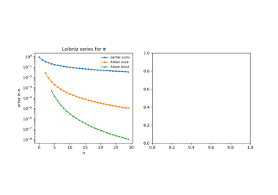
Aitken’s delta-squared process and Steffensen’s method
1934 – Remez and Best Uniform Approximation#
Weierstrass guarantees that good polynomial approximations exist, and Chebyshev had characterized the best one in the maximum norm. A polynomial \(p^*\) of degree \(n\) minimizes \(\max|f - p|\) exactly when the error reaches its largest magnitude at \(n+2\) points with alternating signs. This is the equioscillation theorem. In 1934 Evgeny Remez turned the characterization into an algorithm. Pick \(n+2\) reference points and solve the linear system
for the polynomial and a levelled error \(E\). Then move the
reference to the extrema of the new error curve, and repeat until the
error equioscillates. The Remez exchange algorithm is still how the
polynomial and rational approximations inside math libraries’
exp, sin, and log routines are designed.
Implementation: mathematicskit.numerical_analysis.systems.approximation.remez_minimax()
runs the exchange loop in the Chebyshev basis and returns a
MinimaxResult.
The tests check Chebyshev’s closed form (the best degree-\(n\)
approximation to \(x^{n+1}\) on \([-1,1]\) has error
\(2^{-n}\)), the best line to \(\sqrt{x}\), and
equioscillation for \(e^x\).
References: E. Ya. Remez, “Sur la détermination des polynômes d’approximation de degré donnée,” Communications de la Société Mathématique de Kharkov (4) 10 (1934), 41-63; E. Ya. Remez, “Sur un procédé convergent d’approximations successives pour déterminer les polynômes d’approximation,” Comptes Rendus de l’Académie des Sciences 198 (1934), 2063-2065; L. N. Trefethen, Approximation Theory and Approximation Practice (Philadelphia: SIAM, 2013), Ch. 10.
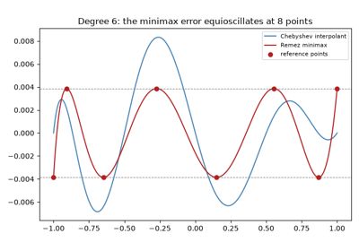
Remez’s algorithm and best uniform approximation
1946 – Schoenberg and Spline Interpolation#
A cubic spline is a piecewise-cubic curve whose value, first derivative, and second derivative all match at every shared node. It takes its name from the draftsman’s spline, a thin flexible strip of wood or metal bent through fixed pins. The strip’s equilibrium shape minimizes bending energy and, for small deflections, is a natural cubic spline. Isaac Jacob Schoenberg’s 1946 papers gave the construction its rigorous mathematical footing and its mathematical name. They turned a draftsman’s tool into a numerical method for drawing a smooth curve through data without Runge-style oscillation, even at equally spaced nodes.
Implementation: mathematicskit.numerical_analysis.systems.splines.CubicSpline
implements both natural and clamped boundary conditions, built on the
banded-system solve in scipy.interpolate.CubicSpline.
References: I. J. Schoenberg, “Contributions to the Problem of Approximation of Equidistant Data by Analytic Functions,” Quarterly of Applied Mathematics 4 (1946), 45-99, 112-141.
1959-1963 – Wilkinson’s Perfidious Polynomial#
While testing root-finding programs on the Pilot ACE computer, James Wilkinson tried the polynomial with roots \(1, 2, \ldots, 20\),
and found that its roots could not be computed accurately from its coefficients. Changing the coefficient \(-210\) by just \(2^{-23}\), about one part in \(10^{9}\), moves ten of the roots into complex pairs, such as \(16.73 \pm 2.81i\). The roots are well separated, so nothing about the polynomial looks dangerous. The cause is extreme sensitivity to the coefficients: a relative change in \(a_{19}\) is amplified by about \(3\times 10^{10}\) in the root near 16. Wilkinson later called this “the most traumatic experience in my career as a numerical analyst.” The episode helped establish backward error analysis and the rule that a polynomial’s roots should be computed from a well-conditioned representation, not from its expanded coefficients.
Implementation: mathematicskit.numerical_analysis.systems.polynomials.wilkinson_polynomial()
builds the coefficients, and
root_condition_numbers()
computes each root’s relative condition number
\(|a_k|\,|r|^{k-1}/|p'(r)|\). The tests reproduce Wilkinson’s
perturbed roots with numpy.roots() and check the condition
numbers against the closed form \(|w'(r)| = (r-1)!\,(20-r)!\).
References: J. H. Wilkinson, “The evaluation of the zeros of ill-conditioned polynomials. Part I,” Numerische Mathematik 1 (1959), 150-166; J. H. Wilkinson, Rounding Errors in Algebraic Processes (Englewood Cliffs, NJ: Prentice-Hall, 1963); J. H. Wilkinson, “The perfidious polynomial,” in Studies in Numerical Analysis, ed. G. H. Golub (Mathematical Association of America, 1984), 1-28.
1965 – Kahan’s Compensated Summation#
Adding \(n\) floating-point numbers left to right can lose
accuracy in proportion to \(n\). Each addition rounds away the
low-order bits of the smaller operand, and the losses pile up. William
Kahan’s 1965 note in Communications of the ACM recovers those bits.
After each addition it computes exactly what was lost,
\(c = (t - s) - y\), and subtracts it from the next term. The
error bound drops from about \(n u \sum|x_i|\) to
\(2u\sum|x_i|\) (with \(u\) the unit roundoff), independent of
\(n\) to first order, at the cost of three extra additions per
term. Kahan went on to lead the design of the IEEE 754 floating-point
standard. Compensated summation, and its relatives such as Neumaier’s
variant (now inside Python’s built-in sum), are standard wherever
long sums must be accurate.
Implementation: mathematicskit.numerical_analysis.systems.summation.kahan_sum()
runs the algorithm as written. The tests compare it with the exactly
rounded math.fsum(), including a million copies of 0.1, where the
naive loop’s error is thousands of times larger.
References: W. Kahan, “Pracniques: Further remarks on reducing truncation errors,” Communications of the ACM 8(1) (1965), 40; N. J. Higham, “The accuracy of floating point summation,” SIAM Journal on Scientific Computing 14 (1993), 783-799.